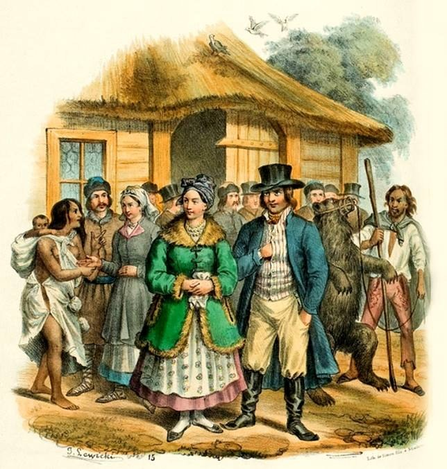

Žemaičiai (Samogitians)¶
Overview¶
[Historical record] The western lowland between Prussia and Livonia, the land bridge the Order needs. Samogitians beat the Sword Brothers at Saulė (22 Sep 1236). They govern themselves through elders and owe the Grand Duke service, not obedience. The land is ceded on paper at Dubysa (1382), Königsberg (1384), Lyck (1390), Salynas (12 Oct 1398) and Raciąż (1404), and held by the Order only about 1404-09. They rose in 1401 and in 1409, which began the Great War. Thorn (1 Feb 1411) gave it to Lithuania for the lifetimes of Jogaila and Vytautas; Melno (27 Sep 1422) permanently. Baptism came in 1413, with the diocese of Medininkai on 24 Oct 1417. A Samogitian delegation testified at Constance (the Proposicio Samaytarum, Feb 1416) that the Order wanted conquest, not conversion.
Žemaičiai (Samogitians)

Žemaičiai (Samogitians) · faction — Image: Jan Lewicki, Public domain via Wikimedia Commons¶

Tipas |
grupuotė |
Pastaba |
Žemaičiai: fiercely pagan western Baltic tribes resisting Teutonic crusader conquest. |
Wants (by book)¶
Book |
Goal |
Leverage |
Red line |
|---|---|---|---|
I |
Follow Kęstutis; not be sold |
Warriors for Vytautas |
Groves felled |
II |
Leave Salynas alone |
Their loyalty to Kęstutis’s son |
Another sale (II ch. 19) |
III |
Rise against the Order |
Forests and bogs; Galminas at the bog bridge, 1409 (III ch. 12, 19) |
The cord of felled oaks (III ch. 1, 4, 6) |
IV |
Honest baptism; no forced clergy |
Delegates at Constance (IV ch. 5) |
The statue at Palanga removed (IV ch. 8) |
V |
Be left alone |
Šiluva stumps, the last žynys (V ch. 11, 27) |
A grand duke who sells them |
Patron Force¶
[The saga’s invention] The Root-Mother and Perkūnas; the Hidden Groves bought by Birutė’s sacrifice are Samogitian.
Internal tensions¶
Elders against the clergy after 1417; those baptised for peace against those who hide the groves; Lithuanian lords who „sell“ the land and elders who never signed. The only actor who can veto a treaty they never saw.
Notable members¶
Galminas, the last of the old žyniai.
Ryšiai
Members: Galminas · Kęsgailos (Kieżgajło)
Sąsajos¶
graph LR
galminas["Galminas"]
kesgailos["Kęsgailos (Kieżgajło)"]
samogitians["Žemaičiai (Samogitians)"]
galminas -->|Member of| samogitians
kesgailos -->|Member of| samogitians
style samogitians stroke-width:3px